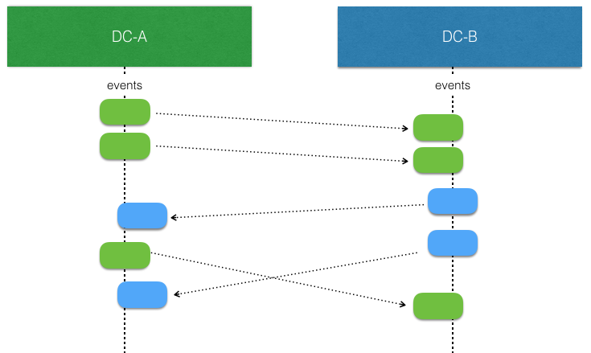

Replicated Event Sourcing
Event Sourcing with EventSourcedBehaviors is based on the single writer principle, which means that there can only be one active instance of a EventSourcedBehavior with a given persistenceId. Otherwise, multiple instances would store interleaving events based on different states, and when these events would later be replayed it would not be possible to reconstruct the correct state.
This restriction means that in the event of network partitions, and for a short time during rolling re-deploys, some EventSourcedBehavior actors are unavailable.
Replicated Event Sourcing enables running multiple replicas of each entity. There is automatic replication of every event persisted to all replicas.
For instance, a replica can be run per:
- Data Center
- Availability zone or rack
The motivations are:
- Redundancy to tolerate failures in one location and still be operational
- Serve requests from a location near the user to provide better responsiveness
- Balance the load over many servers
However, the event handler must be able to handle concurrent events as when replication is enabled the single-writer guarantee is not maintained like it is with a normal EventSourcedBehavior.
The state of a replicated EventSourcedBehavior is eventually consistent. Event replication may be delayed due to network partitions and outages, which means that the event handler and those reading the state must be designed to handle this.
To be able to use Replicated Event Sourcing the journal and snapshot store used is required to have specific support for the metadata that the replication needs (see Journal Support).
The Replicated Event Sourcing video is a good starting point describing the use cases and motivation for when to use Replicated Event Sourcing. The second part, Replicated Event Sourcing data modelling guides you to find a suitable model for your use-case.
Relaxing the single-writer principle for availability
Taking the example of using Replicated Event Sourcing to run a replica per data center.
When there is no network partitions and no concurrent writes the events stored by an EventSourcedBehavior at one replica can be replicated and consumed by another (corresponding) replica in another data center without any concerns. Such replicated events can simply be applied to the local state.

The interesting part begins when there are concurrent writes by EventSourcedBehavior replicas. That is more likely to happen when there is a network partition, but it can also happen when there are no network issues. They simply write at the “same time” before the events from the other side have been replicated and consumed.

The event handler logic for applying events to the state of the entity must be aware of that such concurrent updates can occur, and it must be modeled to handle such conflicts. This means that it should typically have the same characteristics as a Conflict Free Replicated Data Type (CRDT). With a CRDT there are by definition no conflicts, the events can always be applied. The library provides some general purpose CRDTs, but the logic of how to apply events can also be defined by an application specific function.
For example, sometimes it’s enough to use application specific timestamps to decide which update should win.
To assist in implementing the event handler the Replicated Event Sourcing detects these conflicts.
API
The same API as regular EventSourcedBehaviorsA very similar API to the regular EventSourcedBehavior is used to define the logic.
Consuming events via gRPC transport
Since Akka 2.8.0 a gRPC based transport is the recommended way to set up the replication of events between the replicas.
The functionality is provided through the Akka Projection gRPC module, see the details about how to use it up in the Akka Projection gRPC documentation
Complete samples of the gRPC transport set up can be found in the Akka Projection github repository:
Consuming events via direct access to replica databases
It is also possible to consume events with a direct connection to the database of each replica.
See Replicated Event Sourcing replication via direct access to replica databases
Resolving conflicting updates
Conflict free replicated data types
Writing code to resolve conflicts can be complicated to get right. One well-understood technique to create eventually-consistent systems is to model your state as a Conflict Free Replicated Data Type, a CRDT. There are two types of CRDTs; operation-based and state-based. For Replicated Event Sourcing the operation-based is a good fit, since the events represent the operations. Note that this is distinct from the CRDT’s implemented in Akka Distributed Data, which are state-based rather than operation-based.
The rule for operation-based CRDT’s is that the operations must be commutative — in other words, applying the same events (which represent the operations) in any order should always produce the same final state. You may assume each event is applied only once, with causal delivery order.
The following CRDTs are included that can you can use as the state or part of the state in the entity:
Akka serializers are included for all these types and can be used to serialize when embedded in Jackson.
An example would be a movies watch list that is represented by the general purpose ORSetORSet CRDT. ORSet is short for Observed Remove Set. Elements can be added and removed any number of times. Concurrent add wins over remove. It is an operation based CRDT where the delta of an operation (add/remove) can be represented as an event.
Such movies watch list example:
- Scala
-
source
object MovieWatchList { sealed trait Command final case class AddMovie(movieId: String) extends Command final case class RemoveMovie(movieId: String) extends Command final case class GetMovieList(replyTo: ActorRef[MovieList]) extends Command final case class MovieList(movieIds: Set[String]) def apply(entityId: String, replicaId: ReplicaId, allReplicaIds: Set[ReplicaId]): Behavior[Command] = { ReplicatedEventSourcing.commonJournalConfig( ReplicationId("movies", entityId, replicaId), allReplicaIds, PersistenceTestKitReadJournal.Identifier) { replicationContext => EventSourcedBehavior[Command, ORSet.DeltaOp, ORSet[String]]( replicationContext.persistenceId, ORSet.empty(replicationContext.replicaId), (state, cmd) => commandHandler(state, cmd), (state, event) => eventHandler(state, event)) } } private def commandHandler(state: ORSet[String], cmd: Command): Effect[ORSet.DeltaOp, ORSet[String]] = { cmd match { case AddMovie(movieId) => Effect.persist(state + movieId) case RemoveMovie(movieId) => Effect.persist(state - movieId) case GetMovieList(replyTo) => replyTo ! MovieList(state.elements) Effect.none } } private def eventHandler(state: ORSet[String], event: ORSet.DeltaOp): ORSet[String] = { state.applyOperation(event) } } - Java
-
source
public final class MovieWatchList extends ReplicatedEventSourcedBehavior<MovieWatchList.Command, ORSet.DeltaOp, ORSet<String>> { interface Command {} public static class AddMovie implements Command { public final String movieId; public AddMovie(String movieId) { this.movieId = movieId; } } public static class RemoveMovie implements Command { public final String movieId; public RemoveMovie(String movieId) { this.movieId = movieId; } } public static class GetMovieList implements Command { public final ActorRef<MovieList> replyTo; public GetMovieList(ActorRef<MovieList> replyTo) { this.replyTo = replyTo; } } public static class MovieList { public final Set<String> movieIds; public MovieList(Set<String> movieIds) { this.movieIds = Collections.unmodifiableSet(movieIds); } } public static Behavior<Command> create( String entityId, ReplicaId replicaId, Set<ReplicaId> allReplicas) { return ReplicatedEventSourcing.commonJournalConfig( new ReplicationId("movies", entityId, replicaId), allReplicas, PersistenceTestKitReadJournal.Identifier(), MovieWatchList::new); } private MovieWatchList(ReplicationContext replicationContext) { super(replicationContext); } @Override public ORSet<String> emptyState() { return ORSet.empty(getReplicationContext().replicaId()); } @Override public CommandHandler<Command, ORSet.DeltaOp, ORSet<String>> commandHandler() { return newCommandHandlerBuilder() .forAnyState() .onCommand( AddMovie.class, (state, command) -> Effect().persist(state.add(command.movieId))) .onCommand( RemoveMovie.class, (state, command) -> Effect().persist(state.remove(command.movieId))) .onCommand( GetMovieList.class, (state, command) -> { command.replyTo.tell(new MovieList(state.getElements())); return Effect().none(); }) .build(); } @Override public EventHandler<ORSet<String>, ORSet.DeltaOp> eventHandler() { return newEventHandlerBuilder().forAnyState().onAnyEvent(ORSet::applyOperation); } }
The Auction example is a more comprehensive example that illustrates how application-specific rules can be used to implement an entity with CRDT semantics.
Last writer wins
Sometimes it is enough to use timestamps to decide which update should win. Such approach relies on synchronized clocks, and clocks of different machines will always be slightly out of sync. Timestamps should therefore only be used when the choice of value is not important for concurrent updates occurring within the clock skew.
In general, last writer wins means that the event is used if the timestamp of the event is later (higher) than the timestamp of previous local update, otherwise the event is discarded. There is no built-in support for last writer wins, because it must often be combined with more application specific aspects.

There is a small utility class LwwTimeLwwTime that can be useful for implementing last writer wins semantics. It contains a timestamp representing current time when the event was persisted and an identifier of the replica that persisted it. When comparing two LwwTimeLwwTime the greatest timestamp wins. The replica identifier is used if the two timestamps are equal, and then the one from the replicaId sorted first in alphanumeric order wins.
- Scala
-
source
private def eventHandler( ctx: ActorContext[Command], replicationContext: ReplicationContext, state: BlogState, event: Event): BlogState = { ctx.log.info(s"${replicationContext.entityId}:${replicationContext.replicaId} Received event $event") event match { case PostAdded(_, content, timestamp) => if (timestamp.isAfter(state.contentTimestamp)) { val s = state.withContent(content, timestamp) ctx.log.info("Updating content. New content is {}", s) s } else { ctx.log.info("Ignoring event as timestamp is older") state } case BodyChanged(_, newContent, timestamp) => if (timestamp.isAfter(state.contentTimestamp)) state.withContent(newContent, timestamp) else state case Published(_) => state.copy(published = true) } } - Java
-
source
@Override public EventHandler<BlogState, Event> eventHandler() { return newEventHandlerBuilder() .forAnyState() .onEvent(PostAdded.class, this::onPostAdded) .onEvent(BodyChanged.class, this::onBodyChanged) .onEvent(Published.class, this::onPublished) .build(); } private BlogState onPostAdded(BlogState state, PostAdded event) { if (event.timestamp.isAfter(state.contentTimestamp)) { BlogState s = state.withContent(event.content, event.timestamp); context.getLog().info("Updating content. New content is {}", s); return s; } else { context.getLog().info("Ignoring event as timestamp is older"); return state; } } private BlogState onBodyChanged(BlogState state, BodyChanged event) { if (event.timestamp.isAfter(state.contentTimestamp)) { return state.withContent(event.content, event.timestamp); } else { return state; } } private BlogState onPublished(BlogState state, Published event) { return state.publish(); }
When creating the LwwTime it is good to have a monotonically increasing timestamp, and for that the increase method in LwwTime can be used:
- Scala
-
source
private def commandHandler( ctx: ActorContext[Command], replicationContext: ReplicationContext, state: BlogState, cmd: Command): Effect[Event, BlogState] = { cmd match { case AddPost(_, content, replyTo) => val evt = PostAdded( replicationContext.entityId, content, state.contentTimestamp.increase(replicationContext.currentTimeMillis(), replicationContext.replicaId)) Effect.persist(evt).thenRun { _ => replyTo ! AddPostDone(replicationContext.entityId) } case ChangeBody(_, newContent, replyTo) => val evt = BodyChanged( replicationContext.entityId, newContent, state.contentTimestamp.increase(replicationContext.currentTimeMillis(), replicationContext.replicaId)) Effect.persist(evt).thenRun { _ => replyTo ! Done } case p: Publish => Effect.persist(Published("id")).thenRun { _ => p.replyTo ! Done } case gp: GetPost => ctx.log.info("GetPost {}", state.content) state.content.foreach(content => gp.replyTo ! content) Effect.none } } - Java
-
source
@Override public CommandHandler<Command, Event, BlogState> commandHandler() { return newCommandHandlerBuilder() .forAnyState() .onCommand(AddPost.class, this::onAddPost) .onCommand(ChangeBody.class, this::onChangeBody) .onCommand(Publish.class, this::onPublish) .onCommand(GetPost.class, this::onGetPost) .build(); } private Effect<Event, BlogState> onAddPost(BlogState state, AddPost command) { PostAdded evt = new PostAdded( getReplicationContext().entityId(), command.content, state.contentTimestamp.increase( getReplicationContext().currentTimeMillis(), getReplicationContext().replicaId())); return Effect() .persist(evt) .thenRun(() -> command.replyTo.tell(new AddPostDone(getReplicationContext().entityId()))); } private Effect<Event, BlogState> onChangeBody(BlogState state, ChangeBody command) { BodyChanged evt = new BodyChanged( getReplicationContext().entityId(), command.newContent, state.contentTimestamp.increase( getReplicationContext().currentTimeMillis(), getReplicationContext().replicaId())); return Effect().persist(evt).thenRun(() -> command.replyTo.tell(Done.getInstance())); } private Effect<Event, BlogState> onPublish(BlogState state, Publish command) { Published evt = new Published(getReplicationContext().entityId()); return Effect().persist(evt).thenRun(() -> command.replyTo.tell(Done.getInstance())); } private Effect<Event, BlogState> onGetPost(BlogState state, GetPost command) { context.getLog().info("GetPost {}", state.content); if (state.content.isPresent()) command.replyTo.tell(state.content.get()); return Effect().none(); }
The nature of last writer wins means that if you only have one timestamp for the state the events must represent an update of the full state. Otherwise, there is a risk that the state in different replicas will be different and not eventually converge.
An example of that would be an entity representing a blog post and the fields author and title could be updated separately with events AuthorChanged(newAuthor: String)new AuthorChanged(newAuthor) and TitleChanged(newTitle: String)new TitleChanged(newTitle).
Let’s say the blog post is created and the initial state of title=Akka, author=unknown is in sync in both replicas DC-A and `DC-B.
In DC-A author is changed to “Bob” at time 100. Before that event has been replicated over to DC-B the title is updated to “Akka News” at time 101 in DC-B. When the events have been replicated the result will be:
DC-A: The title update is later so the event is used and new state is title=Akka News, author=Bob
DC-B: The author update is earlier so the event is discarded and state is title=Akka News, author=unknown
The problem here is that the partial update of the state is not applied on both sides, so the states have diverged and will not become the same.
To solve this with last writer wins the events must carry the full state, such as AuthorChanged(newContent: PostContent)new AuthorChanged(newContent) and TitleChanged(newContent: PostContent)new TitleChanged(newContent). Then the result would eventually be title=Akka News, author=unknown on both sides. The author update is lost but that is because the changes were performed concurrently. More important is that the state is eventually consistent.
Including the full state in each event is often not desired. An event typically represent a change, a delta. Then one can use several timestamps, one for each set of fields that can be updated together. In the above example one could use one timestamp for the title and another for the author. Then the events could represent changes to parts of the full state, such as AuthorChanged(newAuthor: String)new AuthorChanged(newAuthor) and TitleChanged(newTitle: String)new TitleChanged(newTitle).
Side effects
In most cases it is recommended to do side effects as described for EventSourcedBehaviors.
Side effects from the event handler are generally discouraged because the event handlers are also used during replay and when consuming replicated events and that would result in undesired re-execution of the side effects.
Uses cases for doing side effects in the event handler:
- Doing a side effect only in a single replica
- Doing a side effect once all replicas have seen an event
- A side effect for a replicated event
- A side effect when a conflict has occurred
There is no built in support for knowing an event has been replicated to all replicas but it can be modelled in your state. For some use cases you may need to trigger side effects after consuming replicated events. For example when an auction has been closed in all data centers and all bids have been replicated.
The contains the current replica, the origin replica for the event processes, and if a recovery is running. These can be used to implement side effects that take place once events are fully replicated. If the side effect should happen only once then a particular replica can be designated to do it. The Auction example uses these techniques.
How it works
You don’t have to read this section to be able to use the feature, but to use the abstraction efficiently and for the right type of use cases it can be good to understand how it’s implemented. For example, it should give you the right expectations of the overhead that the solution introduces compared to using just EventSourcedBehaviors.
Causal delivery order
Causal delivery order means that events persisted in one replica are read in the same order in other replicas. The order of concurrent events is undefined, which should be no problem when using CRDT’s and otherwise will be detected via the ReplicationContext concurrent method.
For example:
DC-1: write e1
DC-2: read e1, write e2
DC-1: read e2, write e3
In the above example the causality is e1 -> e2 -> e3. Also in a third replica DC-3 these events will be read in the same order e1, e2, e3.
Another example with concurrent events:
DC1: write e1
DC2: read e1, write e2
DC1: write e3 (e2 and e3 are concurrent)
DC1: read e2
DC2: read e3
e2 and e3 are concurrent, i.e. they don’t have a causal relation: DC1 sees them in the order “e1, e3, e2”, while DC2 sees them as “e1, e2, e3”.
A third replica may also see the events as either “e1, e3, e2” or as “e1, e2, e3”.
Concurrent updates
Replicated Event Sourcing automatically tracks causality between events from different replicas using version vectors.

Each replica “owns” a slot in the version vector and increases its counter when an event is persisted. The version vector is stored with the event, and when a replicated event is consumed the version vector of the event is merged with the local version vector.
When comparing two version vectors v1 and v2:
v1is SAME asv2iff for all iv1(i) == v2(i)v1is BEFOREv2iff for all iv1(i) <= v2(i)and there exist a j such thatv1(j) < v2(j)v1is AFTERv2iff for all iv1(i) >= v2(i)and there exist a j such thatv1(j) > v2(j)v1is CONCURRENT withv2otherwise
Tagging events and running projections
Just like for regular EventSourcedBehaviors it is possible to tag events along with persisting them. This is useful for later retrival of events for a given tag. The same API for tagging provided for EventSourcedBehavior can be used for replicated event sourced behaviors as well. Tagging is useful in practice to build queries that lead to other data representations or aggregations of these event streams that can more directly serve user queries – known as building the “read side” in CQRS based applications.
Creating read side projections is possible through Akka Projections or through direct usage of the events by tag queries.
The tagging is invoked in each replicas, which requires some special care in using tags, or else the same event will be tagged one time for each replica and show up in the event by tag stream one time for each replica. In addition to this the tags will be written in the respective journal of the replicas, which means that unless they all share a single journal the tag streams will be local to the replica even if the same tag is used on multiple replicas.
One strategy for dealing with this is to include the replica id in the tag name, this means there will be a tagged stream of events per replica that contains all replicated events, but since the events can arrive in different order, they can also come in different order per replica tag.
Another strategy would be to tag only the events that are local to the replica and not events that are replicated. Either using a tag that will be the same for all replicas, leading to a single stream of tagged events where the events from each replica is present only once, or with a tag including the replica id meaning that there will be a stream of tagged events with the events accepted locally for each replica.
Determining the replica id of the replicated actor itself and the origin replica id of an event is possible through the ReplicationContextReplicationContext when the tagger callback is invoked like this:
- Scala
-
source
ReplicatedEventSourcing.commonJournalConfig( ReplicationId("TaggingSpec", entityId, replica), allReplicas, queryPluginId)( replicationContext => EventSourcedBehavior[Command, String, State]( replicationContext.persistenceId, State(Set.empty), (state, command) => command match { case Add(string, ack) => if (state.strings.contains(string)) Effect.none.thenRun(_ => ack ! Done) else Effect.persist(string).thenRun(_ => ack ! Done) case GetStrings(replyTo) => replyTo ! state.strings Effect.none }, (state, event) => state.copy(strings = state.strings + event)) // use withTagger to define tagging logic .withTagger( event => // don't apply tags if event was replicated here, it already will appear in queries by tag // as the origin replica would have tagged it already if (replicationContext.origin != replicationContext.replicaId) Set.empty else if (event.length > 10) Set("long-strings", "strings") else Set("strings"))) - Java
-
source
@Override public Set<String> tagsFor(String event) { // don't apply tags if event was replicated here, it already will appear in queries by tag // as the origin replica would have tagged it already if (getReplicationContext().replicaId() != getReplicationContext().origin()) { return new HashSet<>(); } else { Set<String> tags = new HashSet<>(); tags.add("strings"); if (event.length() > 10) tags.add("long-strings"); return tags; } }
In this sample we are using direct database replication with a shared journal, and single tag but only tagging local events to it and therefore ending up with a single stream of tagged events from all replicas without duplicates.
Hot Standby
If all writes occur to one replica and the other replicas are not started there might be many replicated events to catch up with when they are later started. Therefore it can be good to activate all replicas when there is some activity.
This can be achieved automatically when direct access to replica databases and ReplicatedSharding is used and direct replication of events is enabled as described in Direct Replication of Events. When each written event is forwarded to the other replicas it will trigger them to start if they are not already started.
Examples
More examples can be found in Replicated Event Sourcing Examples
Journal Support
For a journal plugin to support replication it needs to store and read metadata for each event if it is defined in the metadata field. To attach the metadata after writing it, PersistentRepr.withMetadata is used. The JournalSpecJournalSpec in the Persistence TCK provides a capability flag supportsMetadata to toggle verification that metadata is handled correctly.
For a snapshot plugin to support replication it needs to store and read metadata for the snapshot if it is defined in the metadata field. To attach the metadata when reading the snapshot the akka.persistence.SnapshotMetadata.apply factory overload taking a metadata parameter is used. The SnapshotStoreSpecSnapshotStoreSpec in the Persistence TCK provides a capability flag supportsMetadata to toggle verification that metadata is handled correctly.
The following plugins support Replicated Event Sourcing over gRPC:
- Akka Persistence R2DBC versions 1.1.0+